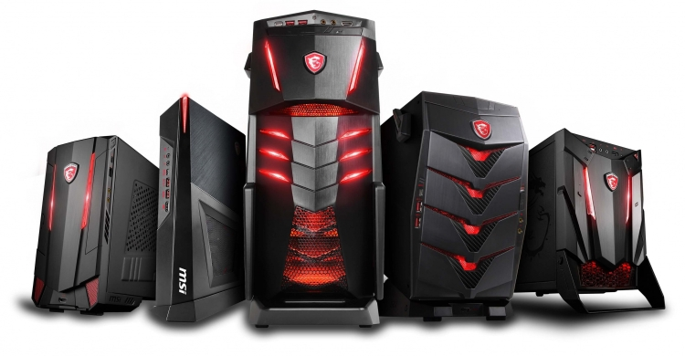

Вибір Комп'ютера: Як Знайти Ідеальне Рішення для Ваших Задач
Вибір комп'ютера - це важливий етап, який визначить ваш досвід роботи, навчання або розваг. Існує безліч параметрів, які потрібно враховувати, щоб знайти оптимальне відповідності вашим потребам. У цій статті ми розглянемо ключові аспекти вибору комп'ютера.
1. Мета Використання: Визначте свої Задачі
Перед тим як вибирати комп'ютер, визначте, для яких задач ви плануєте його використовувати. Якщо ви гравець, вам знадобиться потужний комп'ютер з високою графікою. Для роботи з графікою або відеомонтажу важлива продуктивність процесора. Для офісних завдань може підійти більш компактний і бюджетний варіант.
2. Тип Комп'ютера: Настільний або Ноутбук?
Вирішіть, чи вам потрібен настільний комп'ютер чи ноутбук. Настільні комп'ютери зазвичай є більш продуктивними і можуть бути легко оновлені, але вони менш мобільні. Ноутбуки пропонують мобільність, але часто менше продуктивні.
3. Продуктивність: Технічні Характеристики
Технічні характеристики відіграють важливу роль. Зверніть увагу на процесор, обсяг оперативної пам'яті (RAM) та графічний прискорювач. Для ігор і ресурсозатратних завдань вибирайте потужніші компоненти.
4. Зберігання Даних: HDD чи SSD?
Виберіть тип сховища даних. Жорсткі диски (HDD) забезпечують більше простору для зберігання, але твердотільні накопичувачі (SSD) забезпечують більшу швидкість роботи системи.
5. Розмір і Дизайн: Просторові Обмеження і Стиль
Врахуйте розмір комп'ютера і його дизайн. Якщо у вас обмежений простір, компактний настільний комп'ютер або ноутбук можуть бути вибором. Виберіть дизайн, який відповідає вашому стилю.
6. Екран і Роздільна Здатність: Візуальні Можливості
Якщо ви вибираєте ноутбук, зверніть увагу на розмір і роздільну здатність екрана. Для настільних комп'ютерів, які підключаються до моніторів, виберіть монітор з хорошою роздільною здатністю.
7. Порти і Розширення: Підключення Пристроїв
Переконайтеся, що комп'ютер обладнаний достатньою кількістю портів для підключення ваших пристроїв. USB, HDMI, аудіовиходи - все це важливо для повсякденного використання.
8. Бренд і Репутація: Довіряйте Відомим Виробникам
Вибір комп'ютера від відомого виробника може гарантувати надійність і якість. Досліджуйте відгуки та репутацію бренда перед покупкою.
9. Бюджет: Не Переплачуйте за Непотрібні Опції
Встановіть бюджет і тримайтеся його. Не переплачуйте за характеристики, які вам не знадобляться в повсякденному використанні.
10. Гарантія і Підтримка: Турбуйтесь про Користувача
Перевірте умови гарантії та доступність сервісної підтримки. Надійна гарантія та швидка підтримка можуть бути вирішальними факторами.
Висновок
Вибір комп'ютера - це індивідуальний процес, залежний від ваших потреб і вподобань. Аналізуйте свої завдання, порівнюйте характеристики і обирайте комп'ютер, який наилучшим чином відповідає вашим потребам. Незалежно від того, чи вам потрібен потужний геймерський ПК, компактний ноутбук для роботи в русі, чи стильний настільний комп'ютер для домашнього кабінету, правильний вибір комп'ютера зробить вашу цифрову життя більш зручною і ефективною.
На головну сторінку